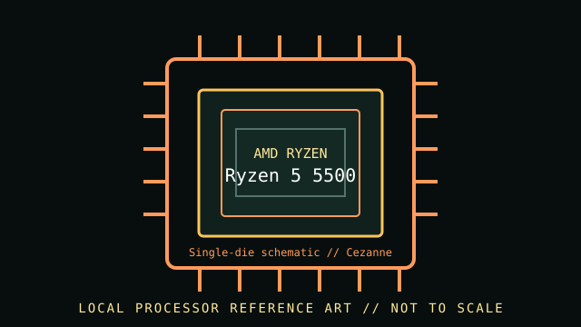

[ INDIVIDUAL CPU COMPONENT // ZEN 3 CEZANNE DESKTOP ]
AMD Ryzen 5 5500
Zen 3 Cezanne desktop; 6 cores / 12 threads, 3.6 GHz base / up to 4.2 GHz max boost, 16 MB L3 cache, 65 W default TDP. Check exact motherboard firmware and system configuration before installation.

MODEL IDENTIFICATION: This record describes AMD Ryzen 5 5500. Confirm the full model name and package markings; adjacent Ryzen model numbers and suffixes can have different silicon, graphics, cache, power and compatibility.
Verified model specifications
| Cataloged part | AMD Ryzen 5 5500 |
|---|---|
| Architecture / family | Zen 3 Cezanne desktop |
| Core / thread count | 6 cores / 12 threads |
| Frequency | 3.6 GHz base / up to 4.2 GHz max boost |
| Cache | 3 MB L2 / 16 MB L3 |
| Default TDP | 65 W |
| Socket / memory | AM4 / Dual-channel DDR4 |
| Expansion / graphics | PCIe 3.0; No integrated graphics; discrete graphics card required. |
| Model distinction | Distinct from Ryzen 5 5600/5600X and Ryzen 5 5500GT; verify the exact model marking and board CPU list. |
Compatibility and service notes
- Install only in an AM4 motherboard whose CPU-support list explicitly includes Ryzen 5 5500 and whose BIOS is at the required version. This Cezanne-derived SKU provides PCIe 3.0 and DDR4 memory support; it has no display output without a discrete GPU.
- Distinct from Ryzen 5 5600/5600X and Ryzen 5 5500GT; verify the exact model marking and board CPU list.
- Package and heatsink dimensions are not represented by this schematic. Confirm the exact board socket, cooler retention/mount, system power delivery and thermal solution in their manuals.
- Record the motherboard model, BIOS/AGESA version, installed memory, cooler, and exact CPU OPN/markings when documenting a working build.
Sources & further reading
- AMD — AMD Ryzen 5 5500 product specificationsManufacturer model page; source for frequency, core/thread count, cache, socket, memory, graphics and default TDP.
- AMD — Processor specifications catalogManufacturer processor specifications index; select the exact full product name when checking model data.
- AMD — Support and documentationOfficial support resources; verify motherboard-level CPU compatibility and BIOS requirements with the motherboard vendor's CPU support list.
Published boost frequency is a maximum, not a guaranteed sustained all-core clock. Motherboard firmware, cooling, memory configuration and workload affect system behavior.